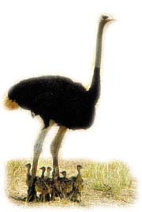

|
Harun Yahya |
Çocuklar Hiç Düþündünüz mü?- 1
|
Harun Yahya |
ZARÝF KUÐULAR
Masmavi sularýn üzerinde zarif ve uzun boyunlarý, iri gövdeleri ile bembeyaz kuðular gururlu bir biçimde yavaþ yavaþ süzülürler. Görünüþteki bu asillik herkesin onlara hayranlýk duymasýný saðlar. Böylesine güzel ve estetik yaratýldýklarýndan, süs kuþu olarak bilinirler.
Çirkin ördek yavrusu masalýný duymuþsunuzdur. Bu masalda anlatýldýðý gibi kuðu yavrularý yumurtadan çýktýklarýnda çok çirkindirler. Kahverengi ya da krem rengindedirler. Kýsa boyunlu ve sýk tüylerle kaplý olarak yumurtadan çýkan yavrular birkaç saat içinde koþabilecek ve yüzebilecek duruma gelirler. Anne ve babalarý yavrularýna birkaç ay boyunca özenle bakarlar. Sonunda çirkin yavru muhteþem bir kuðuya dönüþür. Bu yavrularýn bu kadar kýsa sürede yüzebilmeleri ve deðiþerek çok güzel bir görünüm kazanmalarý ancak Rabbimizin yaratma sanatýndaki mükemmellik sayesinde olur. Bir ayette bildirildiði gibi Allah, "yarattýðý herþeyi en güzel yapan"dýr. (Secde Suresi, 7)
Kuðularýn ‘trumpeter' adý verilen bir türü, geliþmekte olan yumurtalarýnýn sýcak kalmalarýný saðlamak için, yumurtalarýn üzerine otururlar. Sadece zaman zaman ayaða kalkarak yumurtalarý çevirirler. Böylece ýsýnýn her yere eþit daðýlmasýný saðlamýþ olurlar. Kuþkusuz ki yumurtalarýnýn nasýl bir bakýma ihtiyaçlarý olacaðýný kuðulara ilham eden Allah'týr.
Kuðular, Allah'ýn onlara verdiði kabiliyet sayesinde hem su üstünde hem de havada en hýzlý ilerleyen su kuþlarýdýr. Suda karadan daha rahat yaþayan kuðular perdeli ayaklarý sayesinde çok hýzlý yüzerler.
Havalar soðuduðunda uçarak göç eden kuðular çok yüksekten ve çapraz bir hat þeklinde dizilerek uçarlar. Bu sýrada karþýlaþtýklarý güçlü rüzgar akýmýný delmek için "V" biçiminde yol alýrlar. Bu akýllýca formül çok daha hýzlý uçmalarýný ve yolculuk süresince yorulmadan ilerlemelerini saðlar. Tabii ki, ileri bir fizik bilgisi gerektiren bu formülü kuðularýn kendilerinin keþfetmesine imkan yoktur. Herþeyi bilen Allah, onlara bu þekilde uçmalarýný ilham ettiði için böyle uçarlar.
Onlar, üstlerinde dizi dizi kanat açýp kapayarak uçan kuþlarý görmüyorlar mý? Onlarý Rahman (olan Allah')tan baþkasý (boþlukta) tutmuyor. Þüphesiz O, herþeyi hakkýyla görendir. (Mülk Suresi, 19)Kuðular bataklýklarýn, derelerin, gölcüklerin dibinde bulduklarý bitkilerle beslenirler. Uzun boyunlarý yiyeceðe ulaþmalarýný kolaylaþtýrýr. Ördekler gibi suya dalabilirler ve kýsa dalýþlarýnda hiçbir güçlükle karþýlaþmazlar. Kuðularýn bitkileri koparmasýnýn yararlý bir yönü de vardýr: Bazý bitkiler toprak kabartýldýkça büyürler ve olgunlaþýrlar. Ýþte kuðu yiyecek bulmak için dibi karýþtýrdýkça bitki örtüsünün gürleþmesini saðlar. Böylece kendilerinden sonra yaþayacak hayvanlar için bol bol bitki yetiþmesine sebep olurlar. Rabbimiz böylece kuðularý sebep kýlarak bitki örtüsünün geliþmesini saðlar.DEVEKUÞLARI (O KADAR BÜYÜK KÝ UÇAMIYOR!)
Devekuþlarý dünyadaki en büyük kuþlardýr. Boylarý bizim boyumuzdan daha uzundur. Bir devekuþu yaklaþýk 2,5 metre uzunluðunda ve ortalama 120 kilo aðýrlýðýndadýr.Orta Afrika'da gruplar halinde yaþayan bu kuþlar uçma kabiliyetine sahip deðildirler. Ama Allah onlara düþmanlarýndan kaçmalarý için baþka bir özellik vermiþtir. Uzun bacaklarýyla çok hýzlý koþarlar, o kadar hýzlýdýrlar ki, hiçbir insan koþarak onlara yetiþemez. Devekuþu hayvanlar alemindeki en hýzlý koþan iki bacaklý hayvandýr ve 1 saatte yaklaþýk olarak 70 kilometrelik bir hýza ulaþabilmektedir. Ve þimdi size çok ilginç bir þey söyleyelim: Devekuþunun her bir ayaðýnda sadece iki parmaðý vardýr, biliyor musunuz? Üstelik bu parmaklarýn biri diðerinden çok daha büyüktür. Ve devekuþlarý yalnýzca bu büyük parmaklarýnýn üzerinde koþarlar.

Ayrýca, devekuþlarý hýzlý koþmalarýný saðlayan uzun bacaklarý sayesinde usta bir dövüþçüdürler. Ayaklarýyla tekme atarlar ve pençeleriyle düþmanlarýna karþý rahatça kendilerini savunurlar.Dünyanýn bu en büyük kuþunun yumurtasý da kuþ yumurtalarýnýn en büyük olanýdýr. Bu dev yumurtalar için kumda geniþ bir çukur kazar ve buraya tüm yumurtalarý yerleþtirirler. Fakat 10-12 tane yumurtladýklarýnda çukurun büyüklüðünü de ona göre ayarlamalarý gerekir. Eðer devekuþu, çukuru, kumda deðil de toprakta açsaydý, bu çok zaman alýrdý ve kuþun çok fazla enerji harcamasýna sebep olurdu. Gerçekten de kumun taþýnmasý, topraða göre daha kolaydýr. Kumu elinizle bile eþeleyebilirsiniz, fakat toprak için en azýndan bir kürek gereklidir. Ýþte bu nedenle, Allah'ýn ilhamýyla hareket eden devekuþlarý kazmak için topraðý deðil de en az emek harcadýklarý kumu tercih ederler. Sonra da yumurtalarýn üzerini kolayca yine kumla örterler.
Devekuþlarý hakkýndaki bir diðer ilginç bilgi de sürüdeki bütün yumurtalarýn bakýmýný tek bir diþinin üstlenmesidir. Ancak yuva belli sayýda yavruyu barýndýrabildiði için bu diþi önceliði kendi yumurtalarýna verecektir. Devekuþlarý kendi yumurtalarýný kabuklarýn üzerindeki hava delikleri sayesinde ayýrt ederler.
Yumurtadan çýkan yavrular savunmasýzdýr. Her an yýrtýcý bir kuþa yem olabilirler. Ancak, yavrular bir tehlike ile karþýlaþtýklarýnda kendilerini korumak için yere yamyassý serilerek ölü taklidi yaparlar. Bu þekilde, düþmanlarý onlarýn ölü olduðunu düþünerek onlara saldýrmaz. Bu taklidi bütün yavrular ayný þekilde uygular.
Daha dünyaya yeni gelen bir kuþun bunu akletmesi veya öðrenmesi imkansýzdýr! Peki, o zaman nasýl olur da bir kuþ doðar doðmaz adeta bir tiyatrocu gibi böyle bir rol yapma yeteneðine sahip olabilir? Cevap çok açýktýr. Allah, "Rab" yani eðiten, öðreten sýfatýyla baþka hiçbir savunmalarý olmayan bu yavrucaklara böyle etkili bir korunma tekniðini öðretmiþtir.
SÜSLÜ TAVUS KUÞU (HAYVANLAR ALEMÝNÝN EN SÜSLÜSÜ)
Eðer hayvanat bahçesine gitmiþseniz, sizlere þov yapan, mükemmel görünümlü bir tavus kuþu mutlaka görmüþsünüzdür. Tavus kuþlarýnýn en önemli özellikleri, hayal bile edilemeyecek güzellikte renklerle bezenmiþ bir kuyruða sahip olmalarýdýr. Ancak burada tarif edilen kuyruðun sahibi sadece erkek tavus kuþudur.
Baþý ve boynu mavi olan tavus kuþunun, kuyruðundaki "telek" adlý tüyleri yaldýzlý yeþil renkli olup uçlarýnda da bu mükemmel sanatý tamamlayan yuvarlak benekli bir bölüm bulunmaktadýr.
Ancak, bu muhteþem görüntüyü her zaman göremezsiniz. Görebilmek için tavus kuþlarýnýn çiftleþme zamanýný beklemeniz gerekir. Erkek tavus kuþu kuyruðunu yalnýzca çiftleþme gösterisi sýrasýnda, diþinin dikkatini çekmek için yelpaze biçiminde açar.
Burada düþünmemiz gereken þudur: Kendini göremeyen tavus kuþu kuyruðunu aç�����������������������������������������������������������������������������������������������������������������������������������������������������������������������������������������������������������������������������������������������������������������������������������������������������������������������������������������������������������������������������������������������������������������������������������������������������������������������������������������������������������������������������������������������������������������������������������������������������������������������������������������������������������������������������������������������������������������������������������������������������������������������������������������������������������������������������������������������������������������������������������������������������������������������������������������������������������������������������������������������������������������������������������������������������������������������������������������������������������������������������������������������������������������������������������������������������������������������������������������������������������������������������������������������������������������������������������������������������������������������������������������������������������������������������������������������������������������������������������������������������������������������������������������������������������������������������������������������������������������������������������������������������������������������������������������������������������������������������������������������������������������������������������������������������������������������������������������������������������������������������������������������������������������������������������������������������������������������������������������������������������������������������������������������������������������������������������������������������������������������������������������������������������������������������������������������������������������������������������������������������������������������������������������������������������������������������������������������������������������������������������������������������������������������������������������������������������������������������������������������������������������������������������������������������������������������������������������������������������������������������������������������������������������������������������������������������������������������������������������������������������������������������������������������������������������������������������������������������������������������������������������������������������������������������������������������������������������������������������������������������������������������������������������������������������������������������������������������������������������������������������������������������������������������������������������������������������������������������������������������������������������������������������������������������������������������������������������������������������������������������������������������������������������������������������������������������������������������������������������������������������������������������������������������������������������������������������������������������������������������������������������������������������������������������������������������������������������������������������������������������������������������������������������������������������������������������������������������������������������������������������������������������������������������������������������������������������������������������������������������������������������������������������������������������������������������������������������������������������������������������������������������������������������������������������������������������������������������������������������������������������������������������������������������������������������������������������������������������������������������������������������������������������������������������������������������������������������������������������������������������������������������������������������������������������������������������������������������������������������������������������������������������������������������������������������������������������������������������������������������������������������������������������������������������������������������������������������������������������������������������������������������������������������������������������